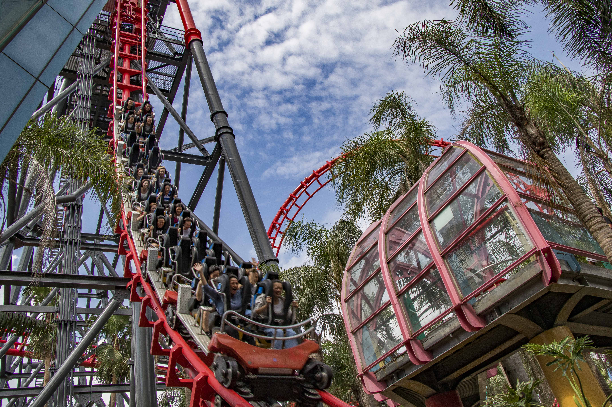
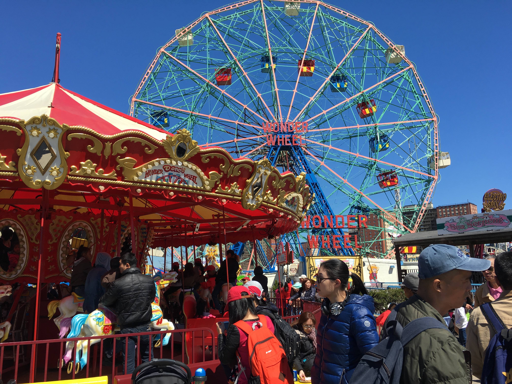
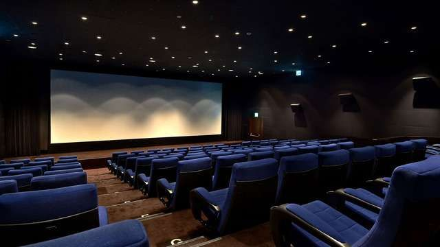

園區簡介 最新消息 票價查詢 營業時間


★ 園區介紹
關於FUN FUN主題樂園
深耕台灣四十年載，拓出台灣遊樂園國際格局
FUN FUN主題樂園由快樂股份有限公司創辦人谷玲玲小姐所建立，玲玲小姐為人殷實、誠信，對於社會回饋及公益亦不遺餘力。由於經營需要，常往返國內外，對國外人民追求高品質生活的要求，不僅心生嚮往，更覺身為企業家及休閒事業的經營者，對於國人創造更美好的生活品質責無旁貸，因此玲玲小姐自1969年在桃園蘆竹投資當時全國唯一一座、且規模最大、佔地七十三公頃的主題樂園，是國內第一家創辦的遊樂園。

FUN FUN主題樂園目前規劃有美國大西部、非洲部落、南太平洋與阿拉伯皇宮 等四大主題村，設有國內外唯一或知名設施，如全球第二座&亞洲唯一之「笑傲飛鷹」、全國最大人工河道「大峽谷急流泛舟」、全國最大「大海盜」、全國最大&唯一兩次體驗旅程設計之「火山歷險」、國內知名「大怒神」與360度正反向旋轉之「風火輪」、斥資12億完工之「蘇丹王大冒險」等等。除上述刺激設施外，六福村仍舊是台灣目前最具規模之開放式野生動物園，包括約七十種、近千頭動物，提供國人近距離觀賞野生動物生態之美。2002年，闢建腹地達兩公頃的「猴園」接手照護園區因重創無法繼續開園的「ㄅㄆㄇ猴園」，建構東南亞及國內最大珍稀類教育園區；2004年暑假引進全台唯一珍稀的白老虎；2007年暑假推出規劃達二年之國內唯一國際級大型飛鳥表演「鳥飛飛BIRDS FLY HIGH」、2008年初，國內唯一之大型刺激遊樂設施3G老油井震撼推出。2010年，甚為國人所期盼的全台灣唯一主題樂園與電影院結合的樂園進駐桃園蘆竹。

世界上最棒的影廳之一的4DX影廳，FUN FUN電影廳2010年獨家引進，打造題樂園與電影院結合的樂園，也是桃園首座4DX影廳，帶給您世界級的最新影音感官全體驗效果。
為滿足觀眾視聽至高無上的享受，FUN FUN電影廳應用最新科技，為未來影城之設計規劃建立新規範，也為台灣的電影院史上樹立新的里程碑。出自名室內設計師之手的2間影廳院，皆具備超大型廣角弧形銀幕及球場座位排列的座椅，提供FUN FUN電影廳之觀眾寬敞舒適、無障礙的空間，為全台唯一經過THX世界標準聲場環境認證的標準影廳，提供北台灣民眾世界級的影音享受。
規劃2廳，各有133/175個座位。
主要撥放國片、藝術片、多元文化影片、以及主題影展。
每日每廳播映三場常態性的影片。
->1廳 A One （175座）
->2廳 A Two （133座）
◎影廳內設有身障席，歡迎來電預約
◎提供場地租借